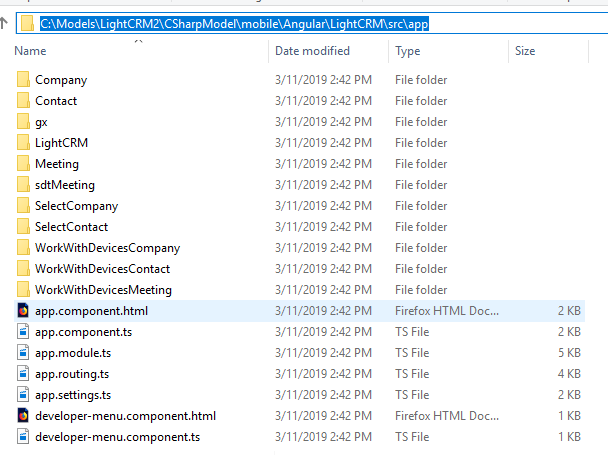
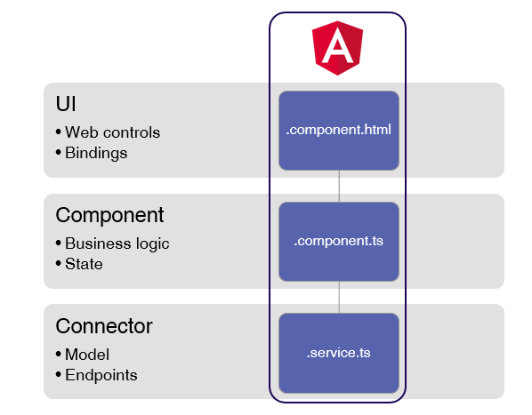

This is a brief description of the different sources of the Angular Generator.
The Angular generator is a front-end generator. The generated objects run on the browser and communicate with the back-end on the server to get and send information.
The back-end is not generated by the Angular generator; instead, it is generated by one of the existing GeneXus generators, such as the Java, .Net or .NetCore generator.
Every GeneXus object is generated in a separate directory, where all the sources are grouped. This is under the <Model directory>\mobile\Angular\<main>\src\apps folder.

The following image is a summary of the generated components for an Angular app:

For each Panel object, a component (the fundamental building block of Angular applications) is generated, which consists of three sources:
The output of the project is a package that can be downloaded and executed by a browser.
For each Business Component, two objects are generated:
The Theme object and Design System Object are generated as a SASS. The classes are converted to CSS if possible, or else, to variables that the controls can use to implement the required functionality.
In addition to the previous objects, other sources are generated in Angular:
The control library is implemented in a separate project independent of the Angular generator.
Here is a complete guide for understanding the architecture of the generated application.